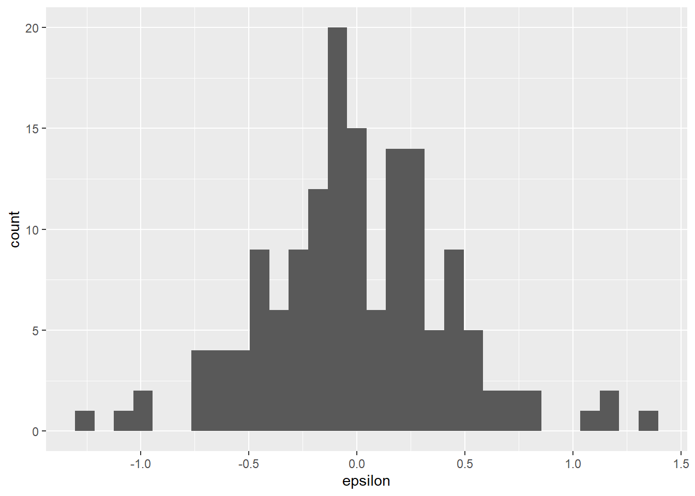
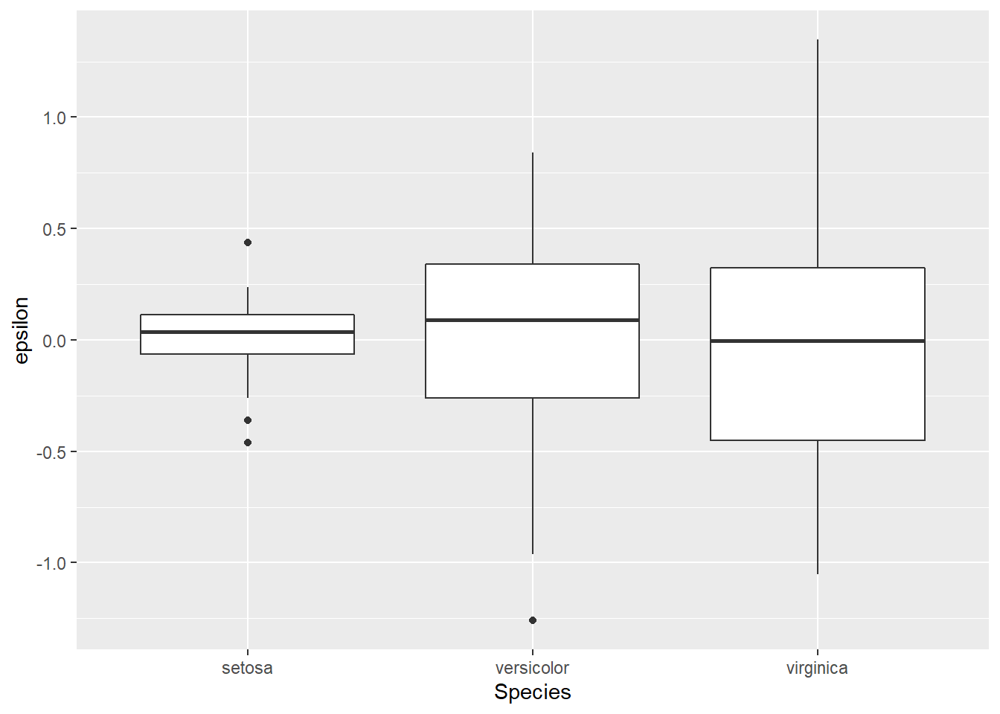
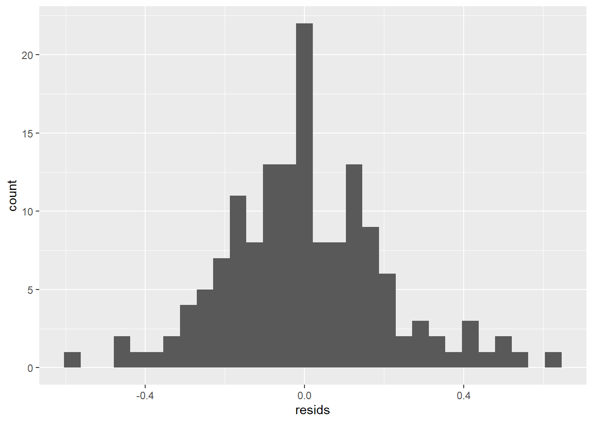
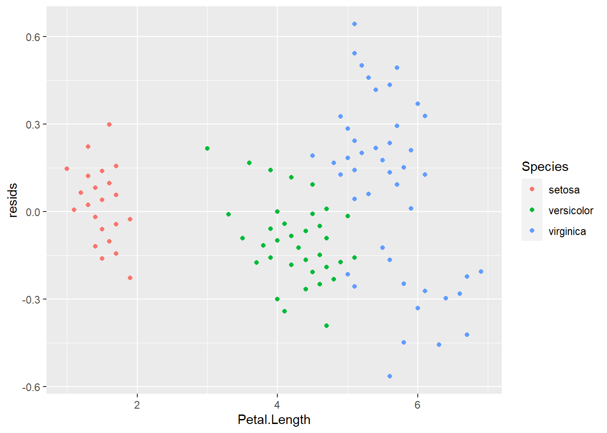

9.3 WTF is a residuals?
Up until now, we’ve been talking about the formula of a line in geometric terms as \(y = mx + b\) or \(y = \beta_0 + \beta X\). In Chapter 7 we extended this simple linear form to be:
\[y = \beta_0 + \beta_1 X_1 ... + \beta_k X_k\]
or
\[\sum_{k=1}^{K} \beta_0 + \beta_k X_k\]
for however many K explanatory variables we may wish to include in a linear model. That’s gross, but it’s about to get grosser. (More gross? Who cares, this is The Worst Stats Text eveR - go Google it)
In this chapter we are going to acknowledge for the first time that it has all been a lie even though those summation symbols really make this book look more official.
From now on, we are going to think about linear models, and all their generalizations or specializations, like this:
\[y = \beta_0 + \beta X + \epsilon\]
or
\[\sum_{k=1}^{K} \beta_0 + \beta_k X_k + \epsilon\] if you like that one better.
Don’t freak out. The only thing that has changed is that we added an error term.
The error term, \(\epsilon\), is called the residual error. For grouping variables, it is the difference between each ith observation \(x\) and the mean (\(\bar{x}\)):
\(x_i - \bar{x}\)
This should look really familiar if you’ve seen the formula for the variance of a normal distribution (which you have because you definitely read and understood Chapter 5):
\[\sigma^2 = \frac{ {\sum_{i=1}^{n} (x - \bar{x})^2}}{n - 1}\]
9.3.1 Residuals in ANOVA
The error for each observation is calculated relative to both the grand mean and group-specific means for each observation (data point) in ANOVA. And, these errors are directly related to the calculation of the sum of squares calculations we talked about for t-tests in Chapter 6 and ANOVA in Chapter 7. As an example of what this looks like, we can calculate the residual error (\(\epsilon\)) of Petal.Length for each Species in the iris data like this:
# Load the iris data
data(iris)
# Calculate mean of each group
means <- iris %>%
group_by(Species) %>%
summarise(x_bar = mean(Petal.Length))
# Have a look
means## # A tibble: 3 x 2
## Species x_bar
## <fct> <dbl>
## 1 setosa 1.46
## 2 versicolor 4.26
## 3 virginica 5.55If we merge these group means with the iris data, it is really easy to calculate the error for each observation in each Species, or group:
# Merge them. R will use "Species" in both by default
resid_df <- merge(iris, means)
# Calculate residual error:
resid_df$epsilon <- resid_df$Petal.Length - resid_df$x_barWe can make a histogram of the residuals to confirm the assumption that the residuals are normally distributed with a mean of zero. This assumption is important because it allows us to drop \(\epsilon\) from the equations above and fall back to our old friend \(y = mx + b\). As you can see below, the mean of our residuals is about zero, and the distribution of residuals also appears to be symmetrical (normal).

We could also examine residuals within Species using a box plot. Again, we should see that our residuals are normally distributed with a mean of zero within groups. However, you may notice that the variance of \(\epsilon\) is clearly not equal between groups.

9.3.2 Residuals in linear regression
For linear regression (continuous \(X\)), the residuals are calculated as the difference between each data point (\(x\)) and the corresponding prediction of \(\hat{y}\) at that value of \(x\) from the line of best fit (\(\epsilon_i = x_i - \hat{y}\)). These are referred to as fitted (\(x\)) and predicted (\(\hat{y}\)) values in R.
Here’s some code in case the math isn’t doing it for you. Don’t worry, we’ll make some graphs, too.
# Fit a linear regression to estimate change
# in Petal.Width with Petal.Length
fit_lm <- lm(Petal.Width ~ Petal.Length, data = iris)
# Now extract the residuals from
# the fitted model object
resids <- fit_lm$residualsThe order of values in the vector resids in the code above matches the order of the data in iris, so we can combine these as we did above:
And now we can make a histogram to see if they are normal with a mean of zero.

This also allows us to determine whether there are any changes in the residuals along the range of \(x\) values to assess whether we have satisfied the assumption of independence of observations. To do this, we just need to plot the residuals against the fitted values (the data in the iris$Petal.Length column).

If we’ve met assumptions of independence of observations, the plot above should look like random scatter from left to right and top to bottom. Looks like that is not the case here because the group of data on the left have a much lower spread of residuals than the rest of the data. In fact, if you color by Species it becomes obvious that these are samples for setosa.

Boo setosa!
Finally, if the code doesn’t do it for you, we can graph the regression to see what residuals actually look like for our model. It is the squared sum of these errors, specifically, which R is trying to minimize when it estimates the coefficients for the formula of our line. That is why we talk about “sums of squares” in ANOVA tables.
Here is a visual representation of residuals. The points are our raw data, the diagonal line is our model prediction, and the vertical lines represent the residual error for each observation.
# Make predictions from the model
y_hat <- predict(fit_lm)
ggplot(iris, aes(x = Petal.Length, y = Petal.Width, color = Species) ) +
geom_smooth(method = "lm", se = FALSE, color = "gray87") +
geom_point() +
geom_segment(aes(xend = Petal.Length, yend = y_hat),
alpha = .2) +
theme_bw() +
theme(panel.grid = element_blank())
So, now that we know what residuals are or at least what they look like we can talk about how they are used.
We will keep making tweaks to our equation in Chapter 10 when we start to think of the linear model more accurately as \(y = \beta X + \epsilon\) or \(\sum_{k=1}^{K} \beta_k X_k + \epsilon\) to unify the t-test, ANOVA, linear regression, and ANCOVA into a single general framework (the general linear model you def read about in Chapter 9).